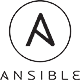

- 


DevOps Services
DevOps is the practice of operations and development engineers participating together in the entire service lifecycle, from design through the development process to production support. DevOps is not a new concept, but it is still maturing.
Our DevOps services emphasizes communication, collaboration and integration between software developers and IT operations. Rather than seeing these two groups as silos who pass things along but don’t really work together, our DevOps consulting services recognizes the interdependence of software development and IT operations and helps an organization produce software and IT services more rapidly, with frequent iterations.
Google Cloud & Kubernetes Consulting
Known for its networking abilities, Google Cloud comes bundled with services from Storage, Machine Learning, Big Data analytics and more. With Kubernetes, Get yourself the latest of Google’s CD/CI tool to reduce your downtime,
a high performance production grade container solution.
Storin DevOps Advantages
200X
More frequent deploys
24X
Faster recovery times
3X
Lower change failure rates
Track record of successful DevOps projects
Storin brings in the top talent in the DevOps, Continuous Integration, Continuous Delivery and Deployment areas, with years of hands-on experience in the Cloud environment. We are experts at optimizing cloud implementations, minimizing costs while improving reliability, scalability and security of the applications. By automating the build, test, and deployment processes we are able to rapidly deliver well-tested, high-quality applications rich in features and functionalities.
Our high quality DevOps consulting services has helped our clients to reach new heights in their products and services. Our DevOps experts have changed how many service and product providers approach solutions. Our continued success in helping transitioning is a testament that Storin have the best DevOps engineers.
Get started
Expertise in the leading cloud platforms
Storin Cloud Consulting offerings help organizations to implement the Cloud Services effectively in a secure and reliable manner. We have an in-depth understanding of the principal cloud computing technologies and have extensive experience in the leading cloud platforms - Microsoft Azure, Rackspace, Amazon Web Services, Google Apps and with our expertise in Kubernetes, we can make sure that our Solutions help our clients achieve time to market at lesser cost.
We at Storin have always been up to date with the latest technologies, we have made ourselves acquainted to Kubernetes, a production-ready container service which has changed how DevOps engineers view the CD/CI process. Contact us to speed up your deployment and integration process.
Get started
Our clients love us

“The Storin team brings a broad range of IT experience to the table. We were able to
integrate the Storin team with our linux support operations team with minimal lead time. This allowed us to expand our
support coverage quickly and efficiently, while maintaining a high standard of service. ”
Nathanial Gardner
“We've been using Storin's IT Support Services, Managed Services, and Cloud Services for
6+ years and I can assure you that you will not find better services or a more competent,
dedicated, and cost effective support team anywhere. ”
Forest Cassidy

“We have always received excellent IT support and professional services from Storin.
Their knowledge and quality have always been above our expectations and their responsiveness is always timely and very
efficient. We consider the Storin team a trusted IT partner who has proven to be excellent in problem resolution, reliable in times of crisis, and very consistent in meeting our lofty support expectations. ”
Scott Lard

“I am writing to both endorse and recommend Storin as a IT Service Provider for any organization. The best measure for me is, the professionalism, knowledge and end to end support, and have achieved the overall objective of the project as well as having fun along the way. The response to problems is always very fast, resolved quickly and can usually be done remotely which saves me time. Great service all round.”
Johnny Cator
“When it comes to getting it done quickly and on price, Storin was
our go-to IT company for 4 years. The services Storin provided was top quality. From initial
inquiry to wrap up, Storin team was like having my own in-house department, only they
were more professional and prompt! Highly recommended.”
Martin Roseman

“I have worked with Storin on a handful of projects over the past year. They are incredibly responsive, professional, knowledgeable, and committed to solving every problem presented. We had a large database migration and we ran into a problem the night of the migration. As a group, we decided to wait a week to iron out the problems. Storin researched the problem on their own, figured out a solution, and migrated it the very next day with no issue. They're definitely my go-to company whenever I have an IT issue. You will not go wrong using Storin.”
Jamie Salvatori

“I have worked with many IT Outsourcing Partners, and I recommend Storin as one of the best. They were professional in providing solutions for my complex requirements and IT Support Issues. They were reliable courteous and had great expertise. I recommend them and will partner with them again.”
Michael Holstein

“Candid to admit...In my experience as far as IT Support is concerned , Storin is probably the best customer friendly company around. We have had nearly 100 % uptime with our emails and website management. Whenever there were some aberrations, they were quick to pounce on the issue and close it . I really appreciate their accountability.When they say they will get back to you. I believe your firm processes along with a trained workforce should be making the things work for you and in the end for customers like us. Take this excellence levels to the future..All the Best !!!!! ”
Pramod Sugathan
Business complexity simplified
Storin is one of the most experienced AWS Consulting Provider and started its Managed AWS Service around a decade. We helped hundreds of customers to build their architecture design, deployment, migration, automation, security, optimization and 24/7 Management. The expert AWS Consulting Team at Storin has vast knowledge and experience in all major AWS services such as Compute, Storage & Content Delivery, Database, Networking, Enterprise Applications, Mobile Services, IoT, Developer and Management Tools, Security and Application Services.
Storin known to be one of the best and reliable AWS Support Team, who help its customers round the clock. The in depth knowledge and experience we possess help our customers to avoid all hassles of migration to the cloud and continuous management thereafter. Our customers get the additional advantage of periodic analysis of the infrastructure which helps them to minimize their unwanted expenses time to time. Storin also include periodic security audit in its AWS Managed Service to make sure the customer infrastructure is always secure without any vulnerabilities.
Storin Cloud Consulting team has a lot of working experience in all major cloud solution providers like AWS, Rackspace, Google Cloud, Digital Ocean, Linode etc. Storin always up to date in technology and that's why we have a very experienced DevOps Support Team. Our service helped a lot of customers to completely achieve the deployment automation and infrastructure automation with industry best Configuration Management Tools like Ansible and Puppet and Continuous Integration with the famous and most used Jenkins.
Managed Services is one of the core expertise of Storin and we have 24/7 Monitoring & Support Team operated from our Network Operation Center (NOC) in India. Storin is one of the preferred backend support team for MSPs, IT Support Companies, Software Development Companies, Cloud Solution Providers and Hosting Providers. Our white labeled support solutions help these partner companies to have their own remote support team with minimal operation expense with access to large talent pool.
We helped Web Hosting Companies, Managed Service Providers, IT Support and Software Development companies to have their Dedicated IT Team for their long term projects and support. Our Dedicated IT Team model is 100% successful business model for all of our customers and the customer possess complete control over the team as in their remote office.
Copyright Storin 2022. All rights reserved.